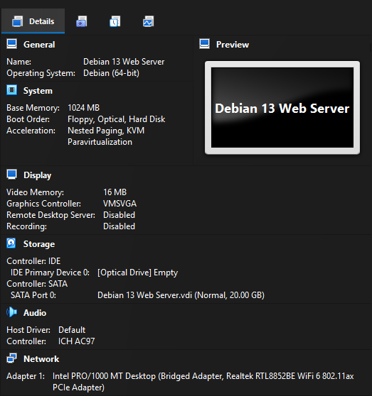
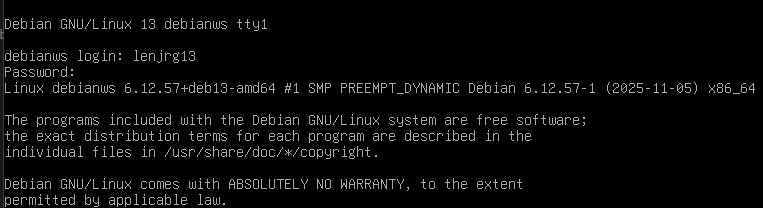
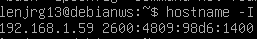
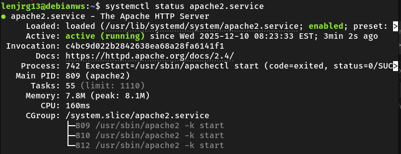
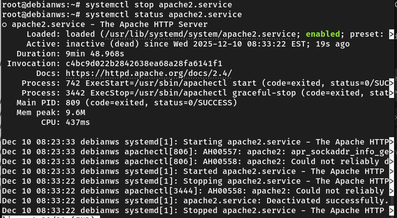
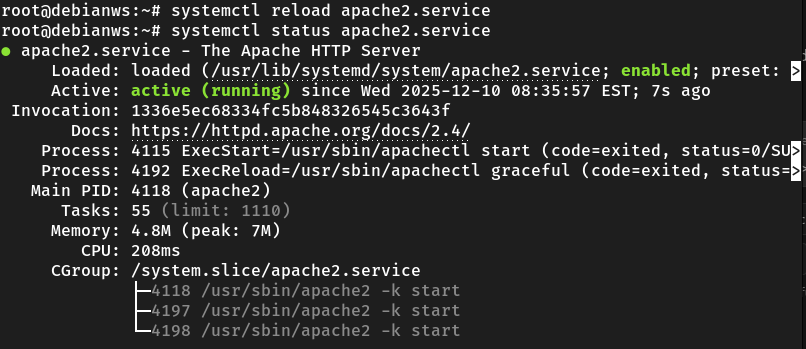
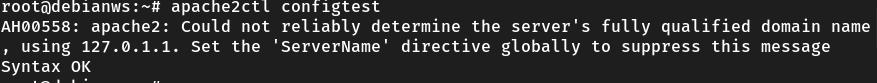
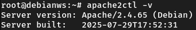
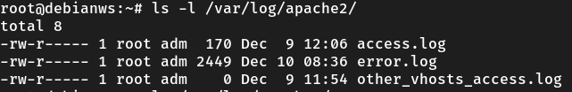
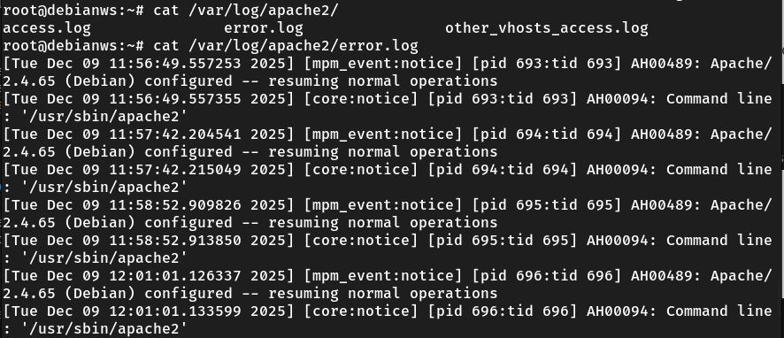

What is the Debian Login Screen?

What is the IP address of your Debian Server Virtual Machine? Here is a screenshot:

How do you work with the Firewall in Debian? A network firewall is a security system, hardware or software, that acts as a digital barrier, monitoring and controlling incoming and outgoing network traffic to protect a private network from unauthorized access and cyber threats like hackers, viruses, and malware by enforcing predefined security rules.
sudo ufw statussudo ufw disablesudo ufw app list | grep Apache
Then, run sudo ufw allow "Profile Name".What is the command you use to check if Apache is running?
systemctl status apache.service as shown in the following screenshot.

What is the command you use to stop Apache?
systemctl status apache.service as shown in the following screenshot.

What is the command you use to restart Apache?
systemctl restart apache2.service as shown in the screenshot below.

What is the command used to test Apache configuration?
Use the following command sudo apache2ctl configtest as shown in the following screenshot.

What is the command used to check the installed version of Apache?
apache2ctl -v

What are some common configuration files for Apache?
ls /var/log/apache2 in the terminal.

Where does Apache store logs?
What are some basic commands we can use to review logs?
cat command can be used to review log files. For example: cat /var/log/apache2/access.log
